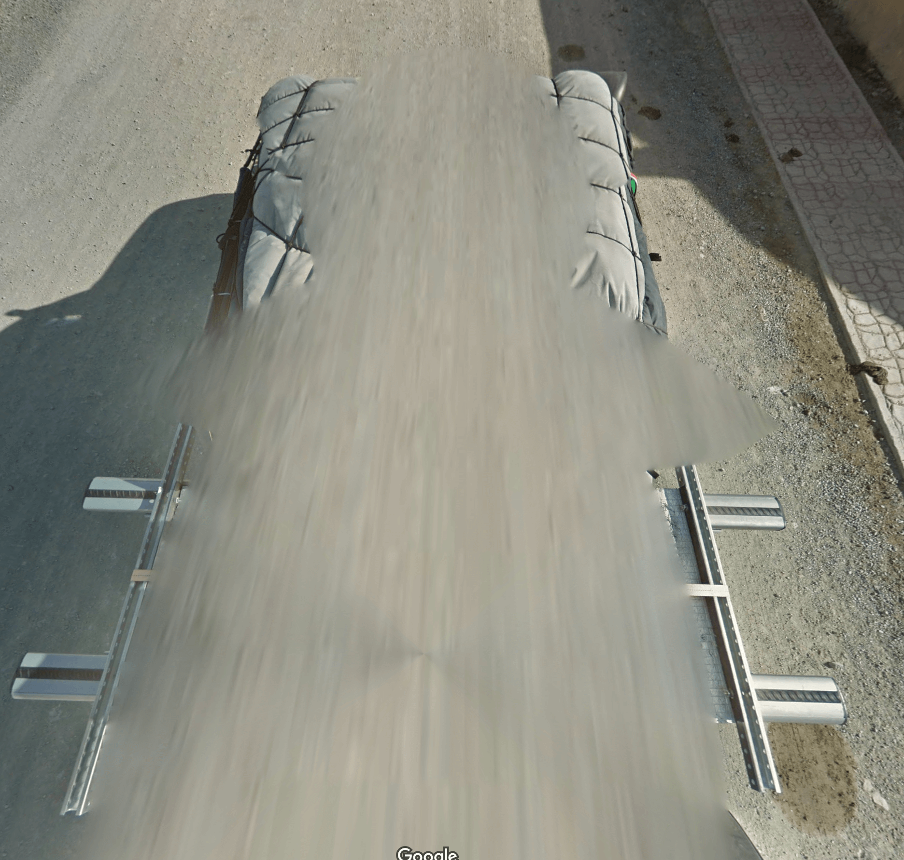

Metas can be one of the easiest ways to identify which country your in or even what city you are in. While almost all coverage by Google is done by car, some of them are done by boats, ATVs, trains, and more. There is also coverage called Trekker, or coverage done by foot. Trekker coverage is by far the hardest coverage to identify, as it almost solely relies on your surroundings, which can usually look similar as they are almost always in a forest or a beach.
By far one of the easiest ones is the Mongolian car, which looks like this:
The best way to memorize this meta is that it has a white tarp covering a bunch of things on the back of a pickup truck, tied down in a grid pattern with black rope. This car is generally found in rural Mongolia, outside of Ulaanbaatar (the capital of Mongolia).
(rest is WIP)